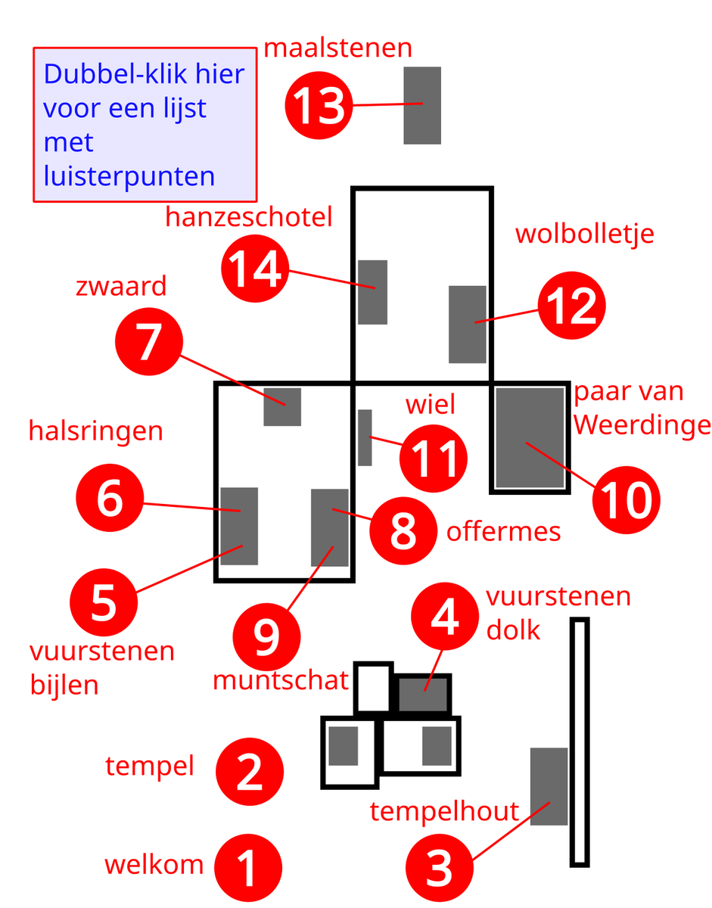

Map of offering treasures

Floor Plan Estimates
Listening points:
- Welcome
- Replica shrine
- Wooden temple components
- Flint dagger
- Flint axes
- Gold necklaces
- The Sword of Ommerschans
- Sacrificial knife
- Coin Treasure
- The Weerdinge couple
- Wooden pulley
- A ball of yarn
- Millstones
- Hanseatic Platter
On this map, you can find the locations of the objects and collections of objects from Offerschatten. Click on one of the areas marked in red to view the objects or collection of objects.
If you're using a phone or tablet, tap the red area once to see a tooltip; tap it a second time to go to the corresponding listening point with the audio.
You can also use the arrow buttons or select an option from the list of listening points.
Click the question mark for more information about the buttons on these pages.
Have fun!